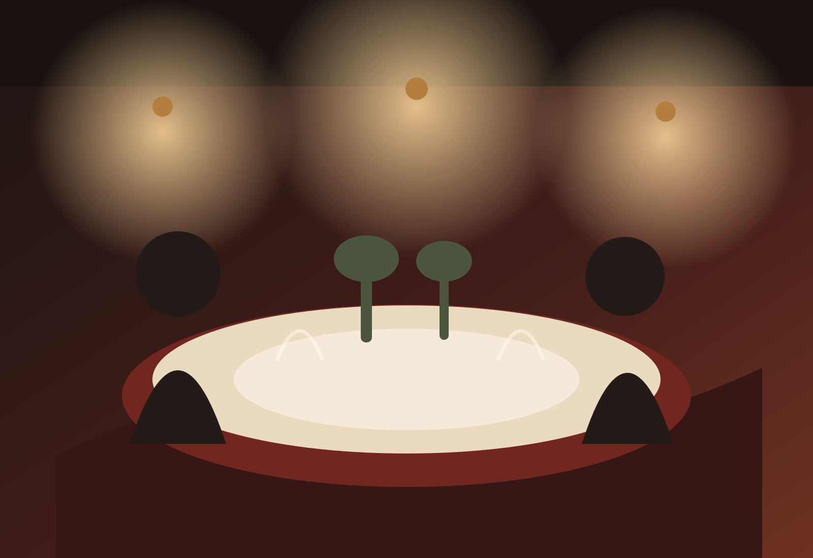
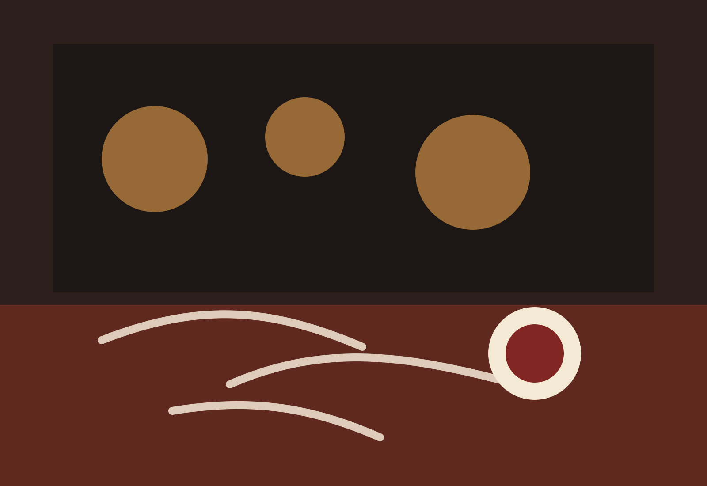
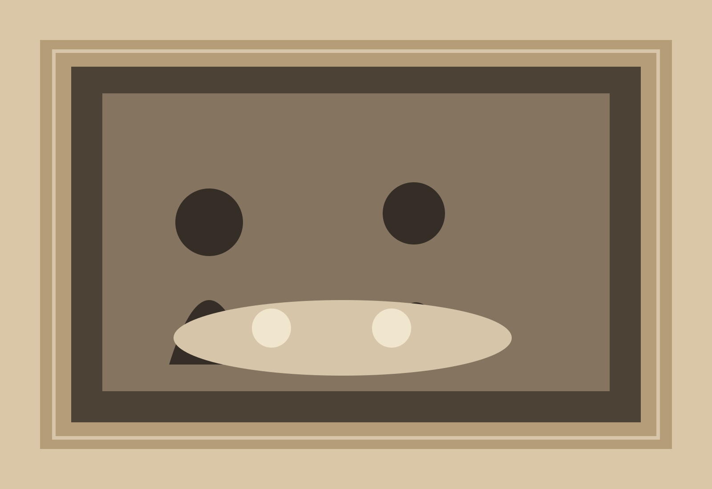
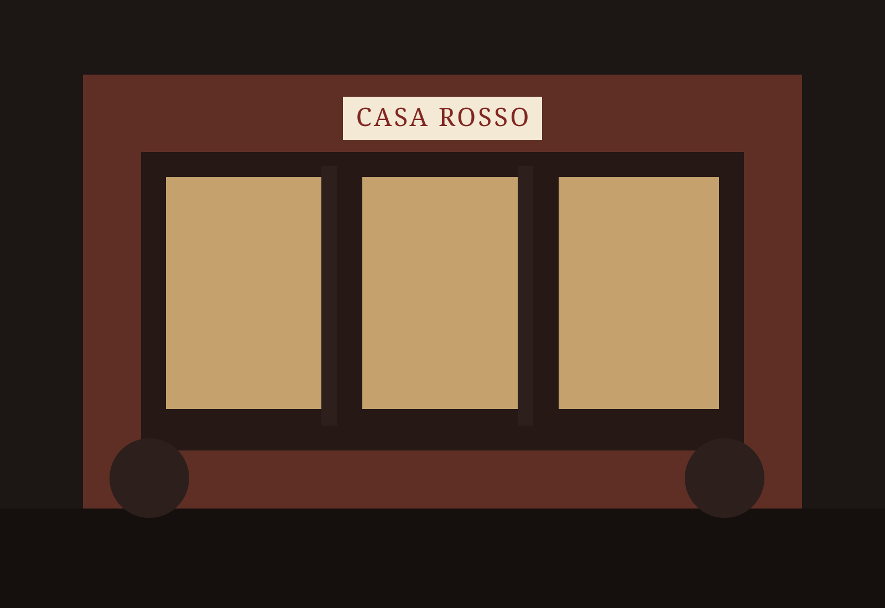

Via del Porto · Since 1988
Casa Rosso
Roman cooking, handmade pasta, local wine, and tables meant to stay occupied.
Neighborhood
trattoria
since 1988
trattoria
since 1988
Dinner nightly · 5:00–10:30Walk-ins held every serviceLunch Tue–Sun · 11:30–2:30


The house
Food first.
Fuss last.
Casa Rosso began with twelve tables and a menu written after the morning market. The room grew; the habit did not. We still make the pasta here, keep the dishes legible, and let dinner take its time.
Read our storyAperitivo / Wine
Start
before
dinner.
A bitter spritz, a small plate of olives, perhaps a glass of something from Lazio. The list leans Italian, small-producer, and food-first. Tell us what you like and what you want to spend; we’ll pour from there.

Via del Porto
The neighborhood table.
Come for lunch, come late, come without a plan. We keep part of the room for walk-ins every service.
- Lunch
- Tue–Sun · 11:30–2:30
- Dinner
- Nightly · 5:00–10:30
- Walk-ins
- Bar + dining room
Reservations
Come hungry.
Stay a while.
Reservations open 30 days ahead. Tables are paced for dinner, not a countdown clock.
Reserve a table